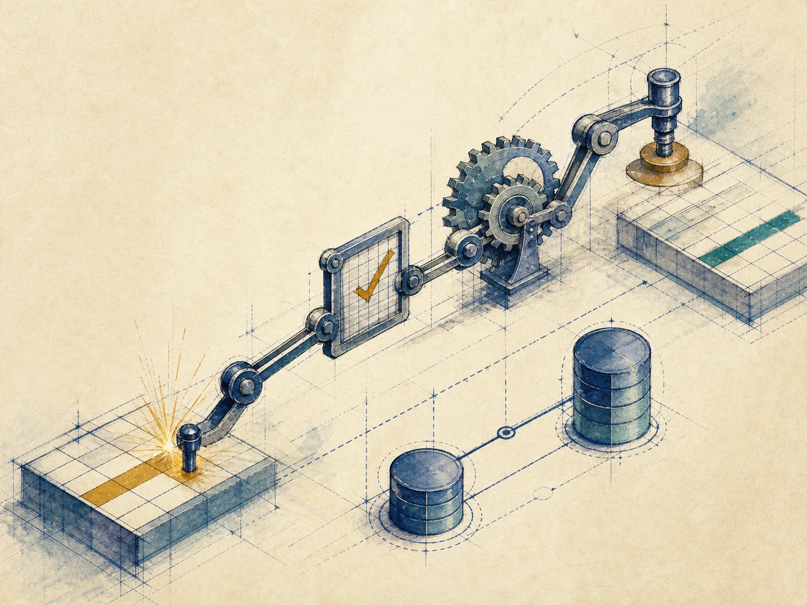
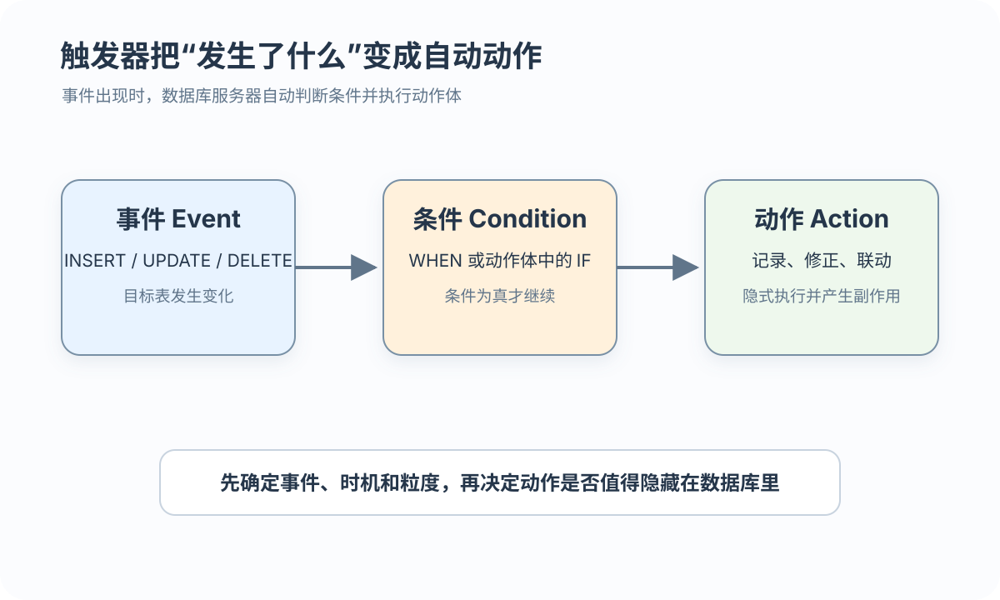

事件
事件可以是 INSERT、DELETE 或 UPDATE

让数据库服务器按规则自动响应数据变化
 VER. 2608
Built with impress.js
VER. 2608
Built with impress.js
把“成绩提高 10% 就记日志”拆成 ECA，并判断它是否易发现、测试和维护
事件发生时先判断条件，再决定是否执行动作

事件 → 条件 → 动作
事件可以是 INSERT、DELETE 或 UPDATE
标准示意可用 WHEN；部分产品在动作体中使用 IF 或条件表达式，实验前需核查
动作可以修正 NEW、拒绝操作、写入日志或联动其他对象
七项写全，维护者才知道监听哪张表、何时触发、执行几次、会改哪些对象
| 要素 | 需要说明 | 例子 |
|---|---|---|
| 1 名称 | 如何识别和维护 | SC_T |
| 2 目标表 | 哪张基本表被监听 | ON SC |
| 3 事件 | 哪类变化激活 | INSERT、DELETE、UPDATE |
| 4 时机 | 变化前还是后 | BEFORE、AFTER |
| 5 粒度 | 一行还是一条语句 | FOR EACH ROW、FOR EACH STATEMENT |
| 6 引用与条件 | 读哪些值，何时执行 | OLD、NEW、WHEN、IF |
| 7 动作体 | 记录、修正或联动什么 | 日志插入或过程块 |
本节只处理基本表触发器；视图能否成为目标及其语法属于产品扩展，不能把标准或其他 DBMS 示例直接复制到实验环境
同一事件可分别定义 BEFORE 和 AFTER，一次操作可能经过两个阶段
BEFORE 在 INSERT／UPDATE 写入前检查或调整 NEW，也可以拒绝操作；例如把工资下限修正为 4000
AFTER 在目标行操作成功后记录 OLD／NEW 或联动其他对象，但不等于事务已经提交
INSERT 通常只有 NEW，UPDATE 有 OLD／NEW，DELETE 通常只有 OLD
AFTER 表示目标行操作成功后执行；后续语句失败时，事务型表中的相关变化仍可能回滚
一次批量更新不等于一次行级动作
01
02
03UPDATE SC
SET Grade = Grade + 1
WHERE Cno = 'C01';| 粒度 | 触发次数 | 适合场景 |
|---|---|---|
| 行级 | 每影响一行一次 | 记录 OLD 与 NEW |
| 语句级（标准／其他 DBMS） | 每条 SQL 一次 | 统计整批变化 |
| 选择依据 | 单行事实或集合事实 | 与动作体需求一致 |
语句级触发器可使用 OLD TABLE／NEW TABLE 等变化集合，具体语法与支持范围依 DBMS；实验前先确认目标产品支持哪种粒度
行级更新可以比较旧值和新值
01
02
03
04
05
06
07
08CREATE TRIGGER SC_T AFTER UPDATE ON SC FOR EACH ROW
BEGIN
IF OLD.Grade IS NOT NULL AND NEW.Grade IS NOT NULL
AND NEW.Grade >= 1.1 * OLD.Grade THEN
INSERT INTO SC_U(Sno, Cno, OldGrade, NewGrade)
VALUES (OLD.Sno, OLD.Cno, OLD.Grade, NEW.Grade);
END IF;
END;OLD／NEW 取决于事件；标准 SQL 与目标 DBMS 的写法要分别核查
用测试数据观察每一步，不能假定同类触发器按未声明顺序执行
INSERT、UPDATE 或 DELETE
可能修改目标表之外的对象
动作可能再次激活其他触发器；该流程按每个受影响行表示简化顺序
不要依赖未声明的同类触发器顺序：查询目标产品目录或显式排序能力，并用可观察结果验证
一次 UPDATE SC 还会写 SC_U 和 AuditLog；后一步失败可能使前面一起失败
当前语句可能失败；事务型表在事务边界内通常一起回滚，需检查存储引擎和事务边界
两个 BEFORE UPDATE 都改 NEW 时，先后顺序可能改变最终值；需确认产品排序规则
写入 SC_U 又激活 AuditLog 触发器时，要检查是否循环、失败是否回滚、总共写了哪些表
是否整体回滚取决于事务、存储引擎和外部副作用；外码级联是否激活触发器、能否回写当前目标表也必须按目标 DBMS 核查
删除触发器前要确认依赖它的业务和测试
01
02
03
04
05-- MySQL 系产品常见形式；执行前核查授课版本
DROP TRIGGER IF EXISTS SC_T;
-- 标准／其他 DBMS 示意，不要与上式混用
DROP TRIGGER SC_T ON SC;删除前先确认产品语法、所需权限、依赖业务与残留日志表；删掉触发器不等于删掉它曾写入的数据
记录历史、自动修正或跨表联动才考虑触发器；成绩范围仍用 CHECK
| 需求 | 优先机制 | 触发器价值 |
|---|---|---|
| 非空、范围、唯一 | NOT NULL、CHECK、UNIQUE | 不必增加隐式过程 |
| 主码、外码 | PRIMARY KEY、FOREIGN KEY | DBMS 原生检查 |
| 记录变化历史 | 约束无法完成 | AFTER 动作写日志 |
| 写入前自动修正 | 约束难以表达 | BEFORE 动作调整值 |
| 批量统计变化 | 语句级触发器、显式 SQL 或应用流程 | 先核查目标 DBMS 粒度支持 |
| 复杂跨表联动 | 触发器或应用流程 | 评估事务边界、触发链、性能和可观察性 |
能用声明式约束表达的规则优先使用约束；触发器主要补足历史记录、自动修正和复杂联动
逐项写 ECA、时机、粒度和 OLD/NEW；能用 CHECK 时不用隐藏动作
AFTER UPDATE 行级读取 OLD／NEW；条件为提高至少 10%，动作为写入 SC_U，日志失败可能使原更新失败
行级动作约执行 100 次；若只需整批计数，先核查语句级支持，否则改用显式 SQL 或应用流程
优先使用 CHECK，因为只需声明合法状态；不要用隐藏动作替代直接约束
画出触发链并测试第二步失败；确认顺序、事务回滚、循环与外部副作用后再决定是否保留联动
SC.Grade 从 60 变 70；若提高至少 10% 就写 SC_U，事件、条件、动作和时机各是什么？